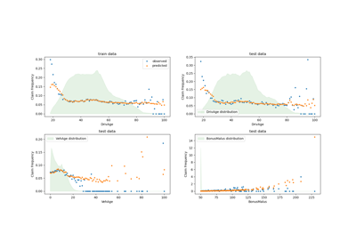

sklearn.metrics.auc¶
- sklearn.metrics.auc(x, y)[source]¶
Compute Area Under the Curve (AUC) using the trapezoidal rule.
This is a general function, given points on a curve. For computing the area under the ROC-curve, see
roc_auc_score. For an alternative way to summarize a precision-recall curve, seeaverage_precision_score.- Parameters:
- xndarray of shape (n,)
X coordinates. These must be either monotonic increasing or monotonic decreasing.
- yndarray of shape, (n,)
Y coordinates.
- Returns:
- aucfloat
Area Under the Curve.
See also
roc_auc_scoreCompute the area under the ROC curve.
average_precision_scoreCompute average precision from prediction scores.
precision_recall_curveCompute precision-recall pairs for different probability thresholds.
Examples
>>> import numpy as np >>> from sklearn import metrics >>> y = np.array([1, 1, 2, 2]) >>> pred = np.array([0.1, 0.4, 0.35, 0.8]) >>> fpr, tpr, thresholds = metrics.roc_curve(y, pred, pos_label=2) >>> metrics.auc(fpr, tpr) 0.75
Examples using sklearn.metrics.auc¶
Species distribution modeling


Tweedie regression on insurance claims
Tweedie regression on insurance claims
Multiclass Receiver Operating Characteristic (ROC)
Multiclass Receiver Operating Characteristic (ROC)
Precision-Recall
Receiver Operating Characteristic (ROC) with cross validation
Receiver Operating Characteristic (ROC) with cross validation